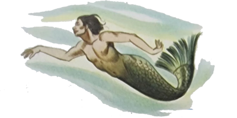
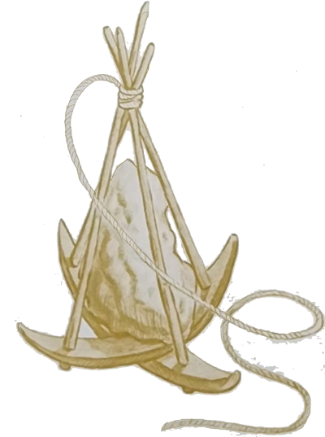
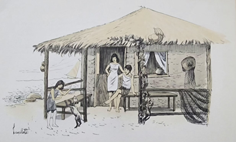
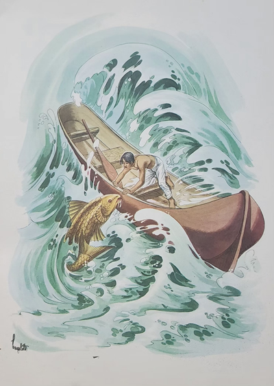
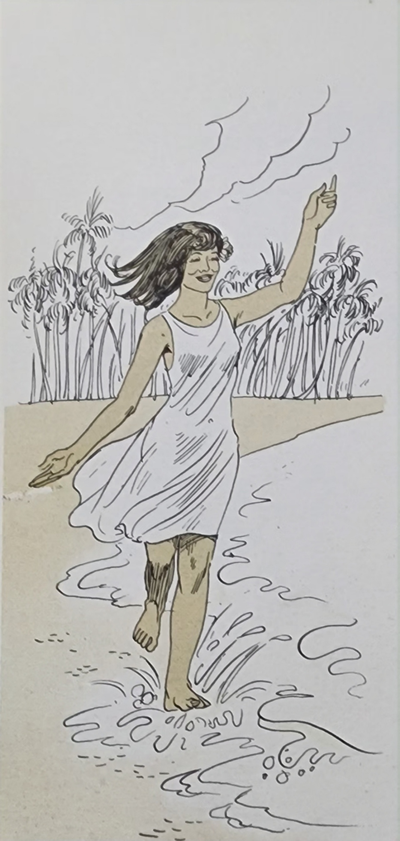
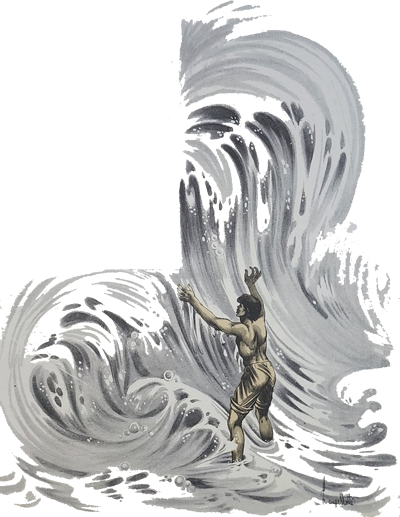
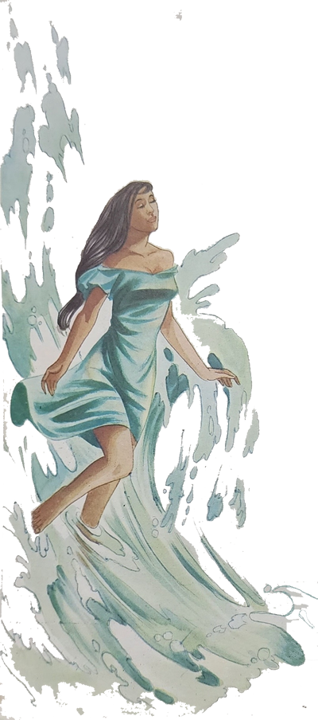
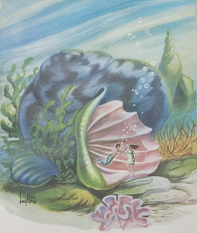
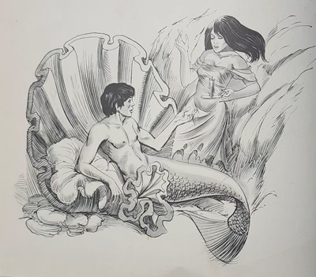

Um dia, logo cedo, os excursionistas rumaram para a praia a fim de verem a puxada da rede. A manhã estava bonita, embora um pouco fria. O Arrelia levava uma enorme cesta para trazer um peixão que pretendia comprar.
As crianças estavam entusiasmadas com as iguarias do litoral. Jaci queria as receitas de tudo o que comera, pois, segundo dissera, jamais ia querer outras comidas. O Arrelia discordara:
- Essas comidas são encantadas. Longe do mar, são diferentes. Não tem o gosto que possuem aqui. Só servem para aumentar a saudade. Vocês vão ver.

Quando já estavam perto do local da puxada da rede, o Arrelia pôs-se a falar no peixe que pretendia comprar:
- Vou escolher o melhor que houver. E o maior! Quero mandar fazer uma “peixauda” . . .
- Não vejo a hora de pôr os dentes nele! – exclamou Iberê.
O Arrelia fez uma expressão de dor e sussurrou:
- Ih! Acho que vou ter de comprar dois!
Enquanto esperavam que a rede chegasse à praia, puseram-se a admirar o trabalho dos pescadores.
- Êta gente forte! – disse o Arrelia. Dá gosto ver esses caboclos puxando a rede, não é mesmo?
Demorou um pouco, os peixes foram amontoados na praia. Havia outros compradores, e o Arrelia teve de ser rápido para conseguir o peixe que desejava. Após ter pechinchado como um louco, pôs o peixe na cesta e foram sentar-se num velho barco abandonado bem dentro da praia. Dali podiam assistir comodamente à venda do pescado.
- Hoje esses Pescadores estão com sorte! É capaz que vendam todo o peixe aí mesmo. Pescaram bastante e há muita gente para comprar. Nem sempre é assim. Às vezes a rede chega vazia – comentou ele.
- Como a vida dessa gente está ligada ao mar, não é, Arrelia? – disse Jaci.
- Se está! – respondeu o Arrelia, admirando a imensidão do mar. É por isso que criam tantas lendas sobre ele. A falta de peixes é uma constante preocupação para esses lutadores, pois é com o produto da pesca que vivem e mantém suas famílias. Contam muitas estórias sobre tributos que pagaram ao mar para que não lhes negasse fartas pescarias. Houve um pescador que entregou as ondas sua própria filha. Querem ouvir a estória?
Havia um Pescador que morava numa casinha muito pobre, com a mulher e a filha, uma linda e esperta menina. Tinham um cachorrinho todo preto que por causa disto recebera o nome de Carvão.
Era um cãozinho muito obediente e a família gostava dele.

Sempre que o Pescador se aproximava de casa, o cachorrinho vinha ao seu encontro. Não falhava. Corria alegre, abanado o rabo, atirava-se aos pés do dono, latia . . . Era uma festa.
A vida do Pescador era sempre aquela: um dia pescava mais, outro dia menos, e o tempo ia passando. Depois veio uma época ruim. Tão ruim que ninguém se lembrava de outra igual! Os homens estavam desesperados. A rede chegava cada vez mais vazia.
Até o cachorrinho Carvão parecia andar “preocupaudo”. Quando vinha ao encontro do seu dono, não mais demonstrava a alegria anterior. Vinha em silêncio e punha no pescador uns olhos tristes, cheios de interrogação. O pescador procurava continuar o mesmo, mas não conseguia. Quando entrava em casa, fingia estar contente, e a mulher e a filha fingiam também. Logo, porém, o silêncio da incerteza tomava conta da pequenina casa.
Tornando-se a fome insuportável, a mulher chamou o marido e disse-lhe:
- Nossas forças já estão no fim. Mais uns dias sofrendo como estamos e não haverá mais esperança. Precisamos fazer alguma coisa agora!
Ele atirou-lhe um olhar vazio, muito longo, e murmurou:
- Não sei o que podemos fazer. Tenho pescado todos os dias mas os peixes não são suficientes. Espero que o outro dia melhore, e ele é pior do que o anterior.
- E não há outra coisa que se possa fazer? Algum outro trabalho?
- De que jeito? Que outro trabalho posso fazer? Tenho esperança de que amanhã seja um dia diferente. O mar há de sentir pena de nós.
A mulher ficou animada com as últimas palavras do marido.
- Isso mesmo? – exclamou ela. Amanhã será outro dia! Você vai fazer a maior pescaria de sua vida!

A menina, que estava sentada num canto, de carinha triste, sorriu. E o cachorrinho pulou e deu uns latidos alegres.
No dia seguinte, o Pescador uniu-se com tanto entusiasmo aos seus companheiros que começaram a pensar que ele descobrira algum modo de arrancar os peixes do mar. E partiram remando com uma “vontaude” . . . Iam até cantando! Mas foi uma decepção. O mar continuava firme no seu egoísmo.
O Pescador ficou sozinho na praia e falou com o mar. Perguntou-lhe por que estava fazendo aquilo. E não é que obteve resposta? Ao ouvir uma voz que vinha das ondas, levou um susto . . . Viu então, bem na crista de uma onda que ficara parada como se fosse de pedra, um peixe cor de ouro, muito bonito. Era ele que estava falando. O pescador apurou o ouvido e entendeu o peixe dizer:
- Possuo poder para dar-lhe as quantidades de peixes que você desejar.
O homem ajoelhou-se ali na areia e pediu ao peixe que terminasse com aquele sofrimento fazendo com que a rede não voltasse mais vazia.
- Assim será – respondeu o peixe.
- Não sei como agradecer! – exclamou o pescador, chorando de alegria. Novamente o peixe falou:
- Só que existe uma condição.
O Pescador ficou um pouco desanimado, Diante daquelas palavras e foi com esforço que murmurou:
- Sim? Que condição?
- Quero sua promessa de que me entregará quem hoje vier primeiro ao seu encontro.

Lembrando-se de que era o cachorrinho Carvão o primeiro a vir sempre encontrá-lo, o homem suspirou aliviado e disse ao peixe:
- Estou de acordo. Faça com que as pescarias sejam fartas e terá o que deseja.
- Muito bem. A partir de amanhã a rede não virá mais vazia.
Depois destas palavras, a onda se movimentou e o peixe desapareceu. O pescador partiu para sua cas pensando: “Não me será fácil entregar o Carvão ao mar. Tão amigo que é . . . Vai ser um sacrifício. Minha mulher ficará triste e minha filha também. Mas não há outra coisa a fazer. Tem de ser sacrificado para que não morramos de fome”. Já estava bem perto de sua casa e esperava de um momento para outro o cãozinho aparecer. Aí aconteceu uma coisa que não lhe passara nem um instante pelo pensamento.
- O que foi, Arrelia? O que aconteceu? = perguntou ansiosamente Jaci.
Como o Arrelia ficou em silêncio, as crianças puseram-se a gritar para que ele continuasse a estória.
- Que gente impaciente! – exclamou ele. Não se pode nem respirar um segundo! Bem, o pescador ficou “paraudo”, tão grande foi o susto. Pela primeira vez o cãozinho não tinha vindo ao seu encontro. Quem vinha correndo, ainda longe, era sua filha. Passado o primeiro susto, ele começou a gritar à filha para que voltasse. “Mande o Carvão!” – pedia ele. A menina parecia não ouvir e continuou a correr até abraçar o pai. “Coitaudo”! Seguiu de cabeça baixa, pensando na promessa.
Mais tarde, ele tornou à praia e pôs-se a gritar chamando o peixe, pois queria desistir do acordo. O peixe não reapareceu e o pescador recolheu-se mais desanimado do que nunca.
Na manhã seguinte, a rede apanhou tanto peixe, mas tanto peixe que ninguém acreditava. E assim aconteceu nas outras manhãs. Era tão fácil agora pescar que ele e seus companheiros começaram a fazer diversas viagens por dia.
Sua mulher, que não mais parava de sorrir, tão contente estava, vivia perguntando ao marido o que ele fizera para conseguir tanta fartura de peixe. Ele sempre procurava fugir do assunto, mas um dia acabou por contar-lhe tudo.
- Como vê – terminou o Pescador – se eu tiver de cumprir minha promessa, nossa filha precisará ser entregue ao mar.
- Não se preocupe – pediu a mulher. Talvez não tenha passado de um sonho. Mesmo que não tenha sido, o tal peixe não deve lembrar-se mais da promessa.
- Você acha? – perguntou ele, animando-se.
- É claro! – Nem há dúvida – garantiu a mulher, pedindo-lhe que não pensasse mais no assunto.
Marisa queixou-se que o Sol estava ficando muito quente e pediu para voltar. Imediatamente as outras crianças também começaram a achar o calor insuportável.
- É bom mesmo – concordou o Arrelia. Vamos embora ou o nosso peixe vai ficar assado. Sem tempero não serve, não é “verdaude”? Depois, quero peixe “ensopaudo” e não “assaudo”.

O Arrelia continuou a contar a estória pelo caminho:
- Os anos foram passando, e aquele povo acabou por habituar-se à fartura. O pescador já havia esquecido completamente a promessa. Sua filha estava moça, e ele andava pensando em levar a família para outro lugar. Não estava rico mas possuía o suficiente para montar algum pequeno negócio. Queria abandonar a pescaria. Estava cansado. Jamais saíra dali. Desejava conhecer outra cidade, vestir-se melhor, dar algum luxo à sua esposa e à sua filha. Afinal, a vida é uma só, e eles haviam sofrido muito.
Certa noite, ele e sua família foram acordados por um barulho ensurdecedor. O que era aquilo? Foram à porta. Todas as pessoas estavam fora de casa, correndo e gritando. O luar clareava tudo. Nem parecia ser noite. Sabem o que estava acontecendo? O mar, que ficava bem afastado do lugarejo, encontrava-se ali, perto das casas. Estava ali, rugindo, ameaçador, com algumas ondas enormes paradas, como se esperassem uma ordem para cair em cima das casas. O pescador compreendeu tudo. O mar viera cobrar sua dívida. Gritando como se houvesse enlouquecido, o pobre homem contou à filha o compromisso que assumira com aquele peixe. A moça ouviu tudo de cabeça baixa e disse:

- É preciso cumprir a promessa, meu pai, ou seremos todos destruídos!
Ninguém teve tempo de segurá-la. Saiu correndo e entrou no mar. As ondas que estavam paradas caíram mansamente sobre a moça, e o mar foi recuando, recuando até encontrar a praia.
Passaram-se alguns meses e ninguém teve mais notícias da moça. Seus pais viviam na maior tristeza. Haviam desistido de sair do lugar na esperança de que o mar lhes devolveria a filha.
Que surpresa tiveram quando numa linda manhã ensolarada a moça entrou alegremente pela casa. Os dois velhos ficaram mudos. Não podia ser verdade! Abraçando-os, ela esclareceu:
- Casei-me com quele peixe, que não é um peixe e sim um homem muito bom. Nunca vi como ele é, pois só vem falar comigo quando a escuridão é completa. Moramos num caramujo tão grande que dá três da nossa casa. Ele permitiu que eu viesse aqui com a condição de voltar ainda hoje. Se eu não for, o mar virá buscar-me.
- Vamos aproveitar para fugir! – disse o pescador.
A moça respondeu-lhe que infelizmente não podia concordar porque o marido havia confiado nela. Também se não voltasse, ele ficaria furioso e mandaria o mar destruir o povoado. Foi com muita tristeza que o pai aceitou a ideia de ver a filha partir novamente.

Sua mulher estava mais preocupada com a “identidaude” do genro. Aquilo não podia ser! Como era possível uma pessoa viver com alguém que não conhecia? Finalmente teve uma ideia:
- Ouça, minha filha. Leve esta vela e estes fósforos. Quando ele estiver conversando, você poderá, ver como ele é.
A moça despediu-se e tomou o caminho do mar. Foi recebida pelas ondas.
- Arrelia! – chamou Carlinhos, puxando-lhe o paletó.
- Vejam só – surpreendeu-se o Arrelia. Fazia tempo que esse “camarauda” não puxava o meu paletó. Será que vai começar outra vez?
- Se ela entrou na água com os fósforos, como é que ela ia acender a vela?
- Mas que menino! – exclamou o Arrelia levantando a bengala. A moça estava também “encantauda”, entedeu? Podia entrar no mar que não se molhava. Nem as coisas que estavam com ela.
A moça chegou ao caramujo onde morava, colocou a vela junto com os fósforos num canto e esperou. Tão logo ficou escuro, o marido apareceu. A filha do pescador acendeu rapidamente a vela e colocou-a perto do rosto dele. Viu um moço muito bonito, só que da cintura para baixo era peixe.

- Você não sabe o que fez! – gritou ele. Hoje era o último dia do meu encantamento! Agora vou ter de ficar mais sete anos assim! E você permanecerá aqui sozinha até que eu volte!
Depois contou que quando era criança for a roubado e encantado pelo mar. Em seguida partiu. A moça ficou sozinha todo aquele tempo. Não tinha ninguém por companhia. Apenas os peixes, as ostras, os cavalos-marinhos. Mas nenhum falava, e o tempo custou muito a passar.
Um dia o moço voltou. Terminara o encanto. Ela ficou muito contente. Seguiram para a casa do pescador. A moça ia pensando: “Meus pais ainda estarão vivos?” Imaginem que alegria quando viu que estavam. O moço começou a trabalhar com o sogro e foram todos felizes para sempre.
- E o cachorrinho Carvão? – perguntou Marisa com ar preocupado.
O Arrelia refletiu um pouco e respondeu:
- O Carvão? Tinha morrido de saudade da moça. Foi pena, não é mesmo?
As crianças protestaram com tanta indignação que o Arrelia foi obrigado a “ressuscitar” o cãozinho:
- Agora me lembro! Ele não morreu, não! Começou a pular e a latir tão logo viu que a moça havia voltado. Quase morreu de alegria, mas não morreu, não!
